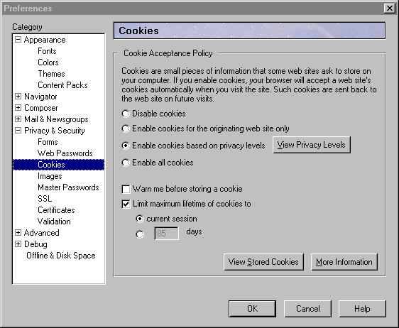
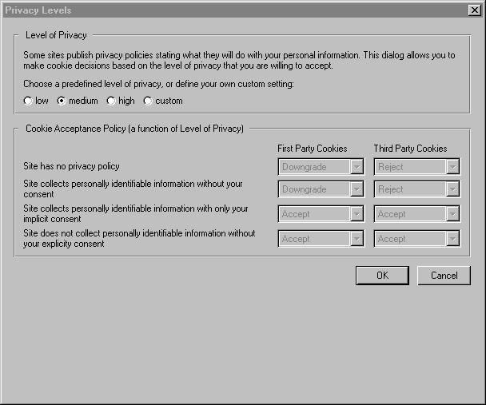

Specification for P3P-based Cookie Management
1. Cookie Preference Panel
| Cookies are small pieces of information
that some web sites ask to store on your computer. If you enable cookies,
your browser will accept a web site's cookies automatically when you visit
the site. Such cookies are sent back to the web site on future visits. Disable
cookies
Enable cookies for the originating site only Enable cookies based on user privacy settings Enable all cookies Warn me before storing a cookie |
2. P3P Window
| Privacy Settings
Some web sites publish privacy policies
which help Netscape distinguish the purpose of the cookies that the web
site wants to set.
Limit
maximum lifetime of cookies to
|
3. Second Thoughts (Changes to Spec)
The above spec was discovered to have the following two flaws:
To rectify these problems, the following changes are being made to the
spec
Also some minor wording changes were made as well.
The revised pictures are as follows:

